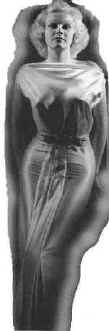
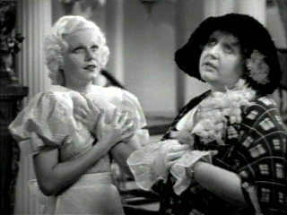
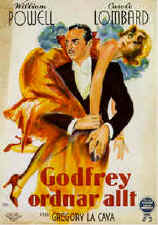
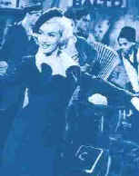
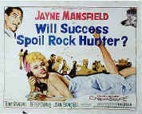

Blonde Bimbos of the Big Screen
By Stu Kobak
During the heyday of Hollywood, the empty-headed Blonde became a screen institution created by the hungry adolescent males who controlled the product that rolled out of the dream factory of Hollywood. It wasn't that Hollywood was indiscriminate. For every Blonde bimbo created for the big screen by the Hollywood machine there were assorted male beefcake boys of the month to appeal to the vast female audience. Rudolph Valentino and Ramon Navarro were not exactly icons of intellectual admiration. The woman wanted their bodies, their exotic looks, they wanted to be swept away from the everyday by desert clothed sheik on a white horse.
 |
|
Harlow: Siren or Bimbo? |
But it was the male fantasy was of the
brassy Blonde, buxom, painted and willing, with a bottom swagger suggestive enough to turn heads in
every direction. The Blonde bimbo was created to massage the male ego, to stroke and inflate his
image of himself and emphasize his superiority over the fairer sex. Some of these Blonde goddesses
were tough and sassy and anything but empty-headed, but the male viewing public, sweating bullets
in shops striving to scratch out a living needed a female ideal to take them away from the drudgery
of everyday reality.
The Blonde bimbo has seen many screen incarnations, though, today it is
rare to see a bimbo on the screen except in a period piece, such as Victor Victoria with
King's girl friend, played to brilliant bimboism by Leslie Ann Warren. More recently, Woody Allen
let it all hang-out in Bullets Over Broadway, presenting the first big screen bimbo in many
years in the curvaceous body of Jennifer Tilly, mindlessly squeaking her way through the role of
theater starved Olive Neal. Allen usually creates personal fantasies of female flesh, young, thin
and pubescent visions of innocence awaiting the sophisticated ravishment of the great Woodsman, a
staunch oak in a forest of flexible saplings.
The classic bimbo was topped by platinum tresses and the visual trip from
top to bottom took more detours and turns than a ride through the high Sierras. For most of the
depression years, the raspy voice and rapid delivery of Jean Harlow served to arouse the collective
lust of the male movie-goer. Harlow had the raw energy and hunger of a woman on the make. Her
blonde hair and strong perfume effectively lured males to the central flame of her womanhood.
Harlow challenged her men, but the more sophisticated males saw her as nothing more than a dumb
blonde morsel, available for some fun on the side and willing to do most anything to please her
man.
 |
|
Harlow in Bombshell. ©MGM/UA |
Harlow cultivated
this image and was queen of the screen for her reign in Hollywood before the precipitous accident
that ended her life and with it the fantasies of a million men who fell asleep dreaming that Jean
Harlow was next to them and that after a day's struggle trying to find work, a gorgeous blonde was
there to make it all worth while.
Brash Jean Harlow was a platinum white light that
burned out under the gaze of Hollywood's Klieg lights. Harlow's reign as the bimbo of the month
lasted for almost seven years during which she wiggled her way through 12 films and starred
opposite such male stars as Spencer Tracy, Clark Gable, Gary Cooper, Franchot Tone. In Red Dust
she provided all the heat the jungle needed to ignite a fire under Clark Gable. Harlow's continued
her assault on Hollywood as the object of mad dog mobster James Cagney* in Public Enemy. But
it was Hell Angel's, a film made by Howard Hughes, that first put hot and sassy Harlow on
the Hollywood map. That spurred the desire of Hollywood moguls for their own bite of
this blonde goddess, but it was ultimately MGM that tied her up in a very tight package showing off
every curve of her voluptuous body. Like the audiences, it is easy to imagine these powerful
Hollywood producers sliding their hands familiarly across her attractive bottom, savoring the
sexuality of Harlow and passing on the taste and smell through movie screens across the country.
She certainly wasn't stupid, but the blonde goddesses she played on the
screen were often empty of brains and focused on things only a woman dressed in slinky clothes with
long red nails and bleached blonde hair would daydream about.
Carole Lombard, represented another unattainable version of
the bimbo, the rich, vacuous, oblivious blonde. A different class of male lusted after Lombard.
These guys wanted to mother the innocent blonde, shelter her from the burdens of banality that were
the bane of every woman's existence. Lombard raced her was through a number of delightful screen
fantasies before her shocking death in an air crash on a war time bond rally trip.
 |
|
Lombard as the ditzy rich girl. |
Lombard's blithe personality and daffy
sense of humor not only captured the movie audience, but captivated Hollywood's reigning screen
king, Clark Gable. The two were
united in marriage to the delight of movie audiences and when Lombard met her untimely death,
millions mourned alongside Clark. Gable would never again hold his love and movie lovers would
never again laugh at Lombard's lightheaded observations about her world.
Every year seemed to bring a new blonde bimbo to the
screen for a short time. Brunettes would take a shot under the bleaching towels to see if the magic
could be captured, if the scent of desire and availability could be communicated through a white
light shining on a filmstrip onto a giant white screen and reflected back to a popcorn chewing
audience with enough goods in tact to suggest a sense of tactile screen reality. You can touch, you
can feel, you can take me in your dreams, boy. The image of the movie producer, a cigar in one hand
and a breathless blonde on the other arm became a clichéd image that defined success. blondes were
sponsored by the movie men in hopes of getting themselves on display before a million hungry eyes
devouring and worshipping at the alter of their beefy blondeness.
By the end of the forties, Hollywood had produced redheads, brunettes,
dark-eyed Europeans with bedroom eyes and sensual accents, and the blonde bimbo's star was
not burning as bright in the Hollywood firmament. Enter Marilyn, breathing innocence and sex
through pouty lips and skin tight gowns. Judy Holiday remained a crossover bimbo in films like Adam's
Rib and Born Yesterday, but Holiday lacked the sexy quality of the typical bimbo and one
might hesitate before believing her empty-headed image in such films as It Should Happen to You
or The Solid Gold Cadillac. After the war, Hollywood was ready to deliver the last of the
great blonde bimbos of the big screen, a goddess whose reign may never be surpassed. Most memorable
of her small supporting of 1950 are The Asphalt Jungle and All About Eve. Monroe's
patented chesty delivery of dialogue began making males pant. In Monkey Business, 1952, Monroe was
given her first prime comic opportunity as a comic blonde bimbo, roles she is most fondly
remembered for. Several noir roles including Niagara and Clash by Night followed and then it
was the perfect specimen of glitz in Gentlemen Prefer Blondes and How to Marry a
Millionaire.
In 1954 the gorgeous blonde movie star began a romance with legendary
baseball player Joltin' Joe Dimaggio. The public went wild. Men could not only fantasize about the
curves of Monroe's body in the flesh, they could sleep with Joe Dimaggio as well. A perfect union
of repressed sexuality from both sides of the ball park. In some ways, the merging of her public
persona and her personal life may have signaled her ultimate downfall. The marriage to
Dimaggio(1956) lasted less than a year**, but the public's love affair with Monroe lasted until her
untimely death under suspicious circumstances in 1962. The highlight of her delightful career must
be considered Billy Wilder's sterling comedy Some Like it Hot. As singer Sugar Kane she
displayed a superb comic sense and epitomized the spirit of the blonde bimbo perfectly.
But her final completed film, John Huston's The Misfits, shows off the serious side of
Monroe's acting talents and perhaps is indicative of the internal conflicts that ultimately led to
her death from an "accidental overdose" of pills.
Piggy backing off the perfect bottom of Monroe, blonde bimbo wannabes,
ready to slip into a tight imitation of Monroe's breathless and fragile femininity, appeared
regularly for their shot of public lust. Mamie Van Doren stuffed herself into hot pants and
presented a prodigious pair of breasts for theater oglers, but she failed to capture the magic of a
Monroe or Harlow or Lombard. Across the Atlantic, the British tried combining a blonde bimbo with a
limey lilt in the person of well built Diana Dors. Her straight blonde hair reaching down to a
protruding bottom were available to movie misters for part of the late fifties and she disappeared
into a quick British middle age before her time.
Hollywood didn't give up. They kept searching for a starlet to light up
the screen with the comic magic of Monroe, who was quickly perceived as a fragile Hollywood
commodity, a platinum flame burning white hot that could last only as long as sufficient oxygen was
there to fuel the flame. Off-screen, Monroe did her best to excite and tantalize all of maledom.
 |
|
Monroe in Gentlemen Prefer Blondes |
Of the likely "blondeidates" to
share the goddess stage with Monroe, only the flamboyant and patently fake Jayne Mansfield surfaced
to make a screen impression. Mansfield was a parody of Monroe and was able to parlay enormous
breasts, lots of blonde straw and a squeaky voice in a number of starring comedies. Mansfield
charmed the likes of Cary Grant with her bimboism in Kiss
Them For Me and starred as the empty headed platinum treat in Will Success Spoil Rock Hunter,
on both stage and screen. At times Mansfield looked as if she were holding her breath, sending her
breasts on a visit to New England and her bottom or an express to Miami. She used a variety of
animal squeals and contorted postures to convey her dubious and obviously artificial sexuality. 
Each of these blonde bimbos of the big screen had their
defining roles that best exemplified the sensuality and brass that made them come to life for
audiences. Bombshell is one of the best vehicles for the comic talents of Jean Harlow. For Lombard,
the daffy My Man Godfrey represents the pinnacle of her comic best along with the hilarious To
Be or Not to Be. Monroe's delivery of sex and innocence climbed to the top of the mountain in Some
Like it Hot, while the lesser blonde light Mansfield made her best screen impression in
"Rock Hunter."
Each of the bimbos profiled enjoyed varying success in
films, but I've chosen only one of their films to look at in length, hoping that the choice will be
enough to suggest the definition of the actress. Judy Holliday made only eleven films, Harlow made
24 films in a very short span , Monroe 29, but mostly supporting roles, Mansfield 24 generally
undistinguished projects prior to and after the few years of her reign as Bimbo of Bimbos, Lombard
almost 50 films, many in bit parts, before capturing Hollywood with her own brand of dizzy
bimboism.
Is it coincidence that many of these platinum woman,
made into artificial bimbos for the screen and in some cases off as well, rose mercurially
from the molten sex pool of Hollywood and died precipitously, long before their time.
Mansfield was 34 years old when she died in an automobile accident. Carol Lombard was 34 also when
she died in a plane crash in 1942, leaving her then husband Clark Gable inconsolable for many
years. Jean Harlow shared more than an early death with Lombard. When she died at an
incredibly young 26, she was engaged to marry William
Powell, Lombard's first husband. Harlow died in hospital of cerebral edema, an ignominious
death for the reigning queen of Hollywood, an actress who took bimboism to the daffy extremes and
delighted audiences with a breathless sensuality. When she succumbed to chronic melancholy and an
overdose of sleeping pills, Marilyn Monroe was all of 36. After titillating pubescent young men
with her round bottom and full breasts for almost a decade and a half, her platinum fire too was
extinguished. Judy Holliday made it all the way through 43 years before her unceremonious demise in
battle against cancer. He cracked voice hadn't been in a movie for five years prior to her death.
The blonde bimbo was an image titillating Hollywood for many years,
perhaps a symbol reflecting the times we lived in. In the more complex world of instant news, it's
difficult for audiences to appreciate that special Hollywood species. The time of innocence is
past, but the legacy left by those buxom babes with bleached hair will delight audiences dipping
into vintage Hollywood for years to come.
*Thanks to reader Graham Taylor who caught a major mistake in my incorrectly crediting Edward G. Robinson as the star of Public Enemy. No, I am not a blonde.
**Jerry Woodling noted that Marilyn Monroe was only married to Joe Dimaggio for less than a year, although their romance lasted longer.

The Movie Poster Archive includes extensive poster images from the films of stars like Susan Hayward, Kirk Douglas, Katharine Hepburn and many more. Our featured star is Lana Turner.

The Feature Archive
has articles ranging from Akira
Kurosawa to Blonde Bimbos.
Movie Rage: Death in the Aisles
Everyone knows what it feels like to get angry at the
movies these days. Here's a humorous but not so delightful view of big screen misery.
Gotta
Dance
Fred and Ginger tapped their way into the hearts of movie fans everywhere. Stu Kobak takes a look at some of those dance
movies that gifted audiences toe-tapping pleasure. Click on the image to get in on the beat.
Puttin on the
Ritz

Fred Astaire and Cyd Charisse bring Silk Stockings to life, a remake of Ninotchka, one of many
films successfully turned into musicals by the Hollywood dream factory. Read all about remakes into
musicals by clicking on the divine dancers.
Sturges Emerges
Preston Sturges was Hollywood's resident comic genius for more than a decade. His movies are
timeless. Click on his image to read all about it.

Is North by Northwest Hollywood's definitive exploration of the nose? From schnozzles to
beezeers, film mavens make the most of the foremost. Click on Mount Hitchcock for more.


DVDPlanet is the DVD
incarnation of legendary laser retailer Ken Crane's. Deep discounts and serious service.


The Big Combo has
style to spare in reviewing films and producing feature articles. Check out their special
"Lingo" section.

Reviews of affordable remote controls in the market place. Codes
and tips as well.

Looking for information about widescreen movies and hardware. The Widescreen Movie Center
is the place to go.

The National Film Preservation Foundation (NFPF) is the nonprofit organization created by the U.S. Congress to save
America's film heritage.

News, information, features about current films in theaters and in the
pipeline. Easy to use interface.

The official site for information about the great comic director. A treat for connoisseurs of
classic Hollywood madcap.

Take a look at the merry images of America's gift to the movies: Hollywood Musical Posters are featured from The Movie Poster Archive.